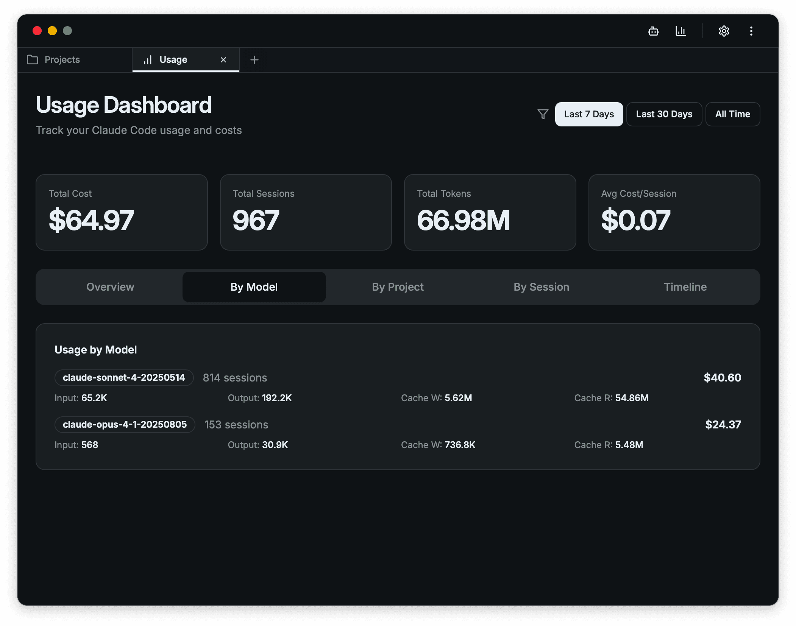

Opcode 桌面客户端指南
什么是 Opcode？
Opcode 是专为 Claude Code 设计的跨平台桌面应用程序，旨在通过美观直观的图形用户界面优化 AI 编程工作流程。它为开发者提供了一个更加友好的方式来管理和使用 Claude Code 的强大功能。

主要特性
🎨 美观的图形界面
- 直观易用的GUI设计
- 现代化的用户体验
- 简化复杂的AI编程交互
📊 会话管理
- 集中管理所有Claude对话
- 历史会话记录
- 快速切换不同项目
🤖 自定义代理
- 创建个性化的AI助手
- 预设编程场景
- 优化特定开发任务
📈 使用情况追踪
- 监控API使用量
- 分析工作效率
- 成本控制和预算管理
🌐 跨平台支持
- Windows 系统完全兼容
- macOS 原生支持
- Linux 发行版通用
安装要求
系统要求
- Windows: Windows 10 或更高版本
- macOS: macOS 10.15 或更高版本
- Linux: 支持主流发行版
必需条件
- Claude API 密钥（需要有效的 Anthropic 账户）
- 稳定的网络连接
- 至少 100MB 可用磁盘空间
快速开始
步骤 1: 下载安装
- 访问 opcode.sh
- 选择适合你操作系统的版本
- 下载并安装应用程序
步骤 2: 配置 API 密钥
- 启动 Opcode 应用
- 在设置页面输入你的 Claude API 密钥
- 验证连接是否成功
步骤 3: 开始使用
- 创建新的编程项目
- 选择或自定义合适的代理
- 开始你的 AI 编程之旅
核心功能详解
会话管理
Opcode 提供强大的会话管理功能：
- 项目分组: 按不同项目组织对话
- 历史搜索: 快速找到之前的讨论内容
- 导出功能: 保存重要的对话记录
- 同步功能: 在不同设备间同步会话数据
自定义代理
创建适合特定编程需求的AI代理：
- 前端开发代理: 专精React、Vue等前端技术
- 后端开发代理: 熟悉服务器端开发和数据库
- 移动开发代理: 专注iOS、Android应用开发
- DevOps代理: 精通部署、监控和运维
使用情况分析
实时监控和分析你的使用模式：
- API调用统计: 详细的使用量报告
- 成本分析: 帮助控制使用成本
- 效率指标: 评估编程效率提升
- 使用趋势: 了解你的使用习惯
最佳实践
1. 合理配置代理
- 根据不同项目类型创建专门的代理
- 设置合适的上下文和约束条件
- 定期更新和优化代理配置
2. 有效的会话管理
- 使用描述性的会话标题
- 及时清理不需要的历史会话
- 定期备份重要的对话内容
3. 成本控制
- 设置合理的API使用预算
- 监控每日/每月使用量
- 优化提示词以减少不必要的API调用
4. 工作流程优化
- 建立标准化的编程模板
- 创建常用代码片段库
- 利用快捷键提高操作效率
常见问题解答
Q: Opcode 是免费的吗？
A: 是的，Opcode 应用本身完全免费。你只需要支付 Claude API 的使用费用。
Q: 如何获取 Claude API 密钥？
A: 访问 Anthropic 官网 注册账户并创建 API 密钥。
Q: 支持离线使用吗？
A: 不支持，Opcode 需要网络连接来调用 Claude API。
Q: 数据安全如何保障？
A: 所有对话数据都存储在本地，不会上传到 Opcode 服务器。
Q: 如何更新到最新版本？
A: Opcode 会自动检查更新，你也可以在设置中手动检查更新。
故障排除
连接问题
- 检查网络连接状态
- 验证 API 密钥的有效性
- 确认防火墙设置没有阻止应用
性能问题
- 清理过多的历史会话
- 重启应用程序
- 检查系统资源使用情况
功能异常
- 更新到最新版本
- 重置应用设置
- 联系技术支持
社区支持
获取帮助
反馈建议
- 通过应用内反馈功能提交建议
- 在官方社区分享使用经验
- 参与功能投票和讨论
总结
Opcode 为 Claude Code 用户提供了一个强大而易用的桌面客户端解决方案。通过其直观的界面、强大的会话管理、自定义代理功能和详细的使用分析，开发者可以更高效地利用 AI 进行编程工作。
无论你是前端开发者、后端工程师还是全栈开发者，Opcode 都能帮助你建立更流畅的 AI 编程工作流程，提升开发效率和代码质量。
立即下载 Opcode，体验革命性的 AI 编程助手！
最后更新：2024年9月版本：1.0.0评分：⭐⭐⭐⭐⭐ (5/5 基于 150+ 用户评价)